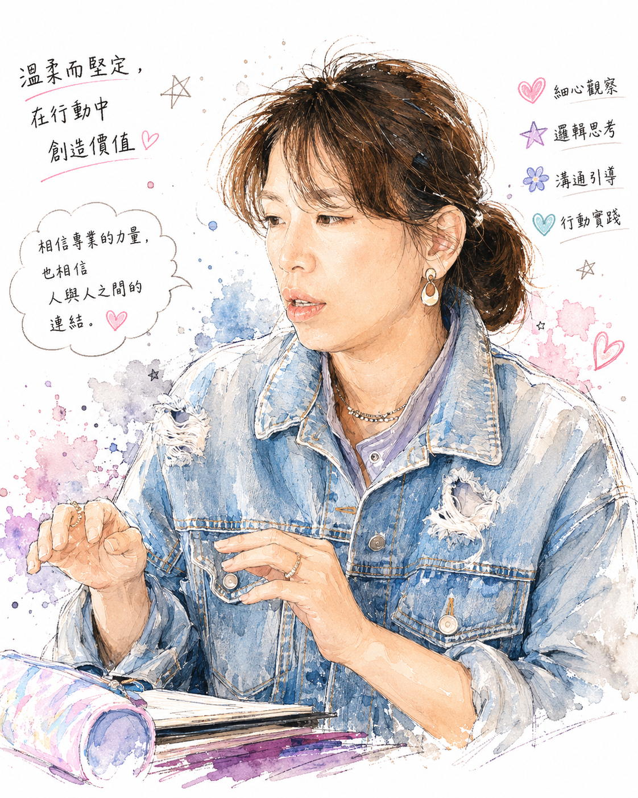
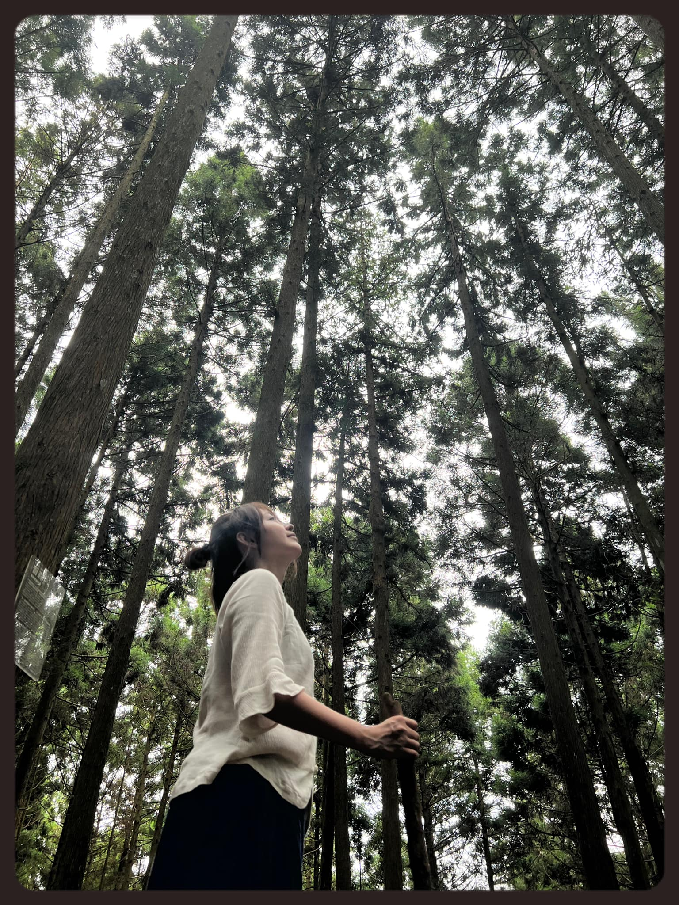
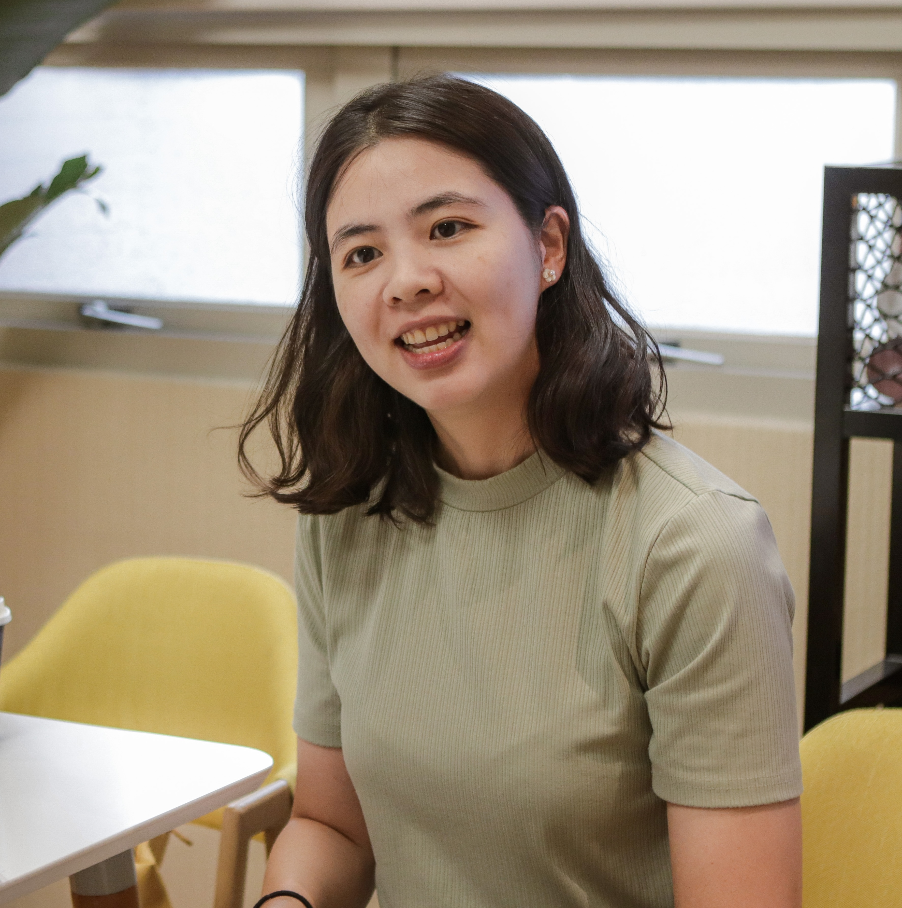
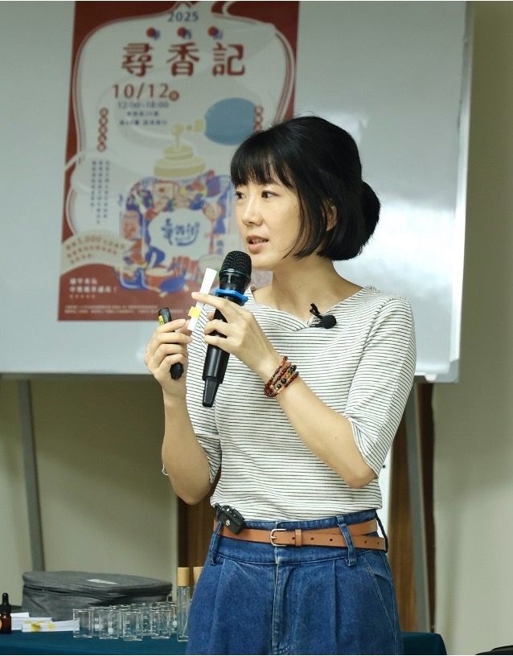
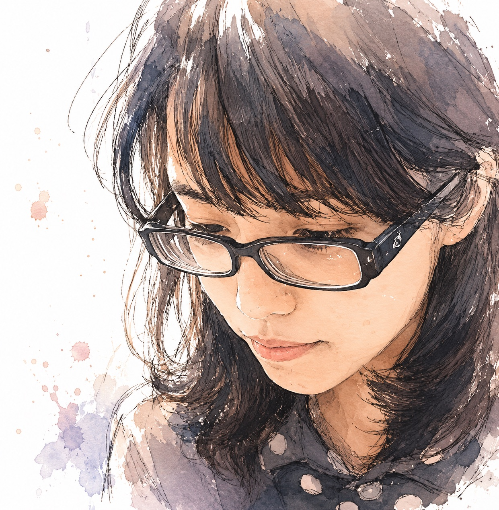
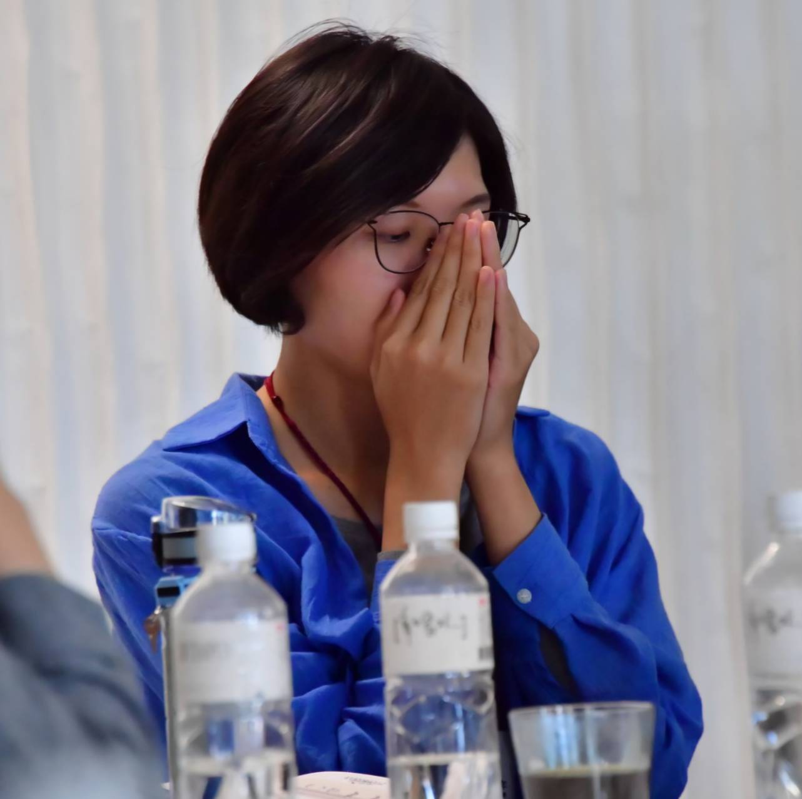
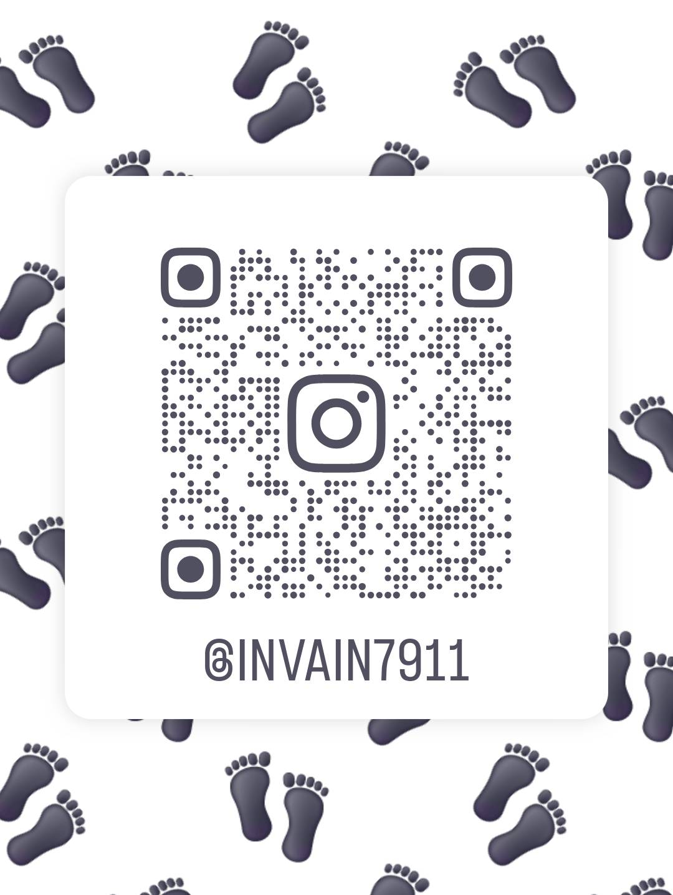

Experience × Client Feedback
體驗精油側寫
還不確定精油側寫適不適合你？先來參加一場體驗講座，親身感受香氣如何說出你當下的身心狀態，帶走屬於你的第一份側寫印象。
擇期開放已準備好開始？從下方選擇一位與你氣味相投的側寫師，直接預約一對一精油側寫諮詢——旁邊附上他們過去個案的真實回饋。
具多年身體工作與精油側寫經驗，累計服務逾 5000 小時個案。畢業於台東身心整合與運動休閒產業學系，持有美國 NAHA 證照，曾任馥蘭朵烏來芳療師與醫療長照、幼兒芳療講師。
現於桃園提供一對一服務。擅長將精油側寫融合多元手技，精準支持大腦超載的疲憊靈魂，在溫柔觸碰中找回內在的清晰與放鬆。
Yuyue Bodymind
我喜歡這個旅程，並且由玥來引導我使用抓周精油真正的享受在其中，原來植物的能量香味，可以讓我們的腦波感受到舒服之外，心靈上的引導我們必須自我覺醒，也就是讓自己去面對內心更深處的自己。
以往我遇到不合理、不明白的事一概只用離開來解決問題，殊不知更多的累積變成更多的議題再次從生活中出現，變成必須再面對一次，那麼我只能用離開來解決嗎？最後最後的一個關鍵其實是《接受》。
《接受一切的發生》當下的傻、決策、不甘，其實都是真的，那麼那就是《真實的自我存在》。當我存在當下的情緒以及無能為力，其實就是我自己——我要接受真正的自己，也藉著接受我自己，我也更知道《愛自己的需要》。
我《真正的需要》是什麼？不是只有〈想要〉，更多貼近我身體狀況、精神狀況的需要滿足了、完成愛自己的議題後，那麼順位的想要才有辦法襯托出〈我自己〉來。〈愛自己〉的課題不再只是物質生活，心靈滿足不再是順位，更多的豐富是由自己準備好就可以出發。

曾在醫學中心手術室工作二十五年，退休後成為療癒教學工作者。法國普羅芳 Pranarom 認證芳療師、衛福部核可繼續教育講師。她的課堂不強迫你正向思考，而是讓你先把盔甲放下來，找回自己本來的聲音。
21 天療程結束後，心境與生活在不知不覺中產生了許多轉變，真實體會到老師所說的「精油蝴蝶效應」。
原本只是在人生方向上有些迷惘，想透過人類圖理解自己的原廠設定；沒想到在精油側寫的過程中，長期壓抑的疲憊與無助感竟然被「看見」了。「被看見、但不被定義」，對我而言是非常重要的療癒起點。
使用精油初期身體出現明顯調整反應，老師的醫護背景與清楚說明讓人非常安心。她沒有慌亂或推卸，而是耐心解釋、教我如何觀察，並把「是否繼續使用」的選擇權完整交還給我。
透過嗅覺繞過過度理性的防衛（真的很適合理性腦），身體在穩定節奏中自然啟動整合能力，連夢境中也開始進行心理重整。短短三週內，看見了原本需要更長時間累積的轉變發生，非常令人驚豔。
這段合作像是在人生低谷停靠的「補給與校準驛站」——卸下不再適合的舊裝備，溫柔而實際地升級。謝謝老師超出期待的付出，以及這段界線清楚、彼此信任的同行經驗。

隨意療，是一個溫柔陪伴人回到內在的療癒空間。她相信療癒是在心鬆動、流動之時，自然發生的狀態。當心隨意轉，療癒，便從內在開始。
專注於芳香療癒、植物精油側寫與薩滿療癒，在竹東的小鎮裡，靜靜守著一方餘裕。
精油的能量幫助了我，幾次使用下來，原本緊繃焦慮的心情逐漸沉澱了下來，漸漸的感受到久違的平靜與放鬆。過程中，生活中累積的壓力，好似逐漸釋放，發現入睡變得簡單，安穩深沉。21天的側寫旅程結束後，覺得精神變得飽滿，變得更正向了！

舞蹈動作治療師，同時也是芳療師。運用英國受訓的心理動力觀點，結合精油側寫與 21 天整合陪伴，協助人們在語言之外整合深層的情緒與內在感受。期待一同探索內心安住的島嶼，自在前行。
上次精油側寫結束之後，我發現那些平時被忽略的情緒和想法，其實一直都在。要學著先傾聽自己，接著勇敢表達，因為如果我不說，永遠沒有人會替我說。謝謝你帶我進入精油側寫的體驗！
靠著三支精油就能夠很精準的提到我最近的身心狀況，真的很神奇，而且有些我自己也沒發現。喜歡精油芳療的真的都可以找她預約試試看，還想許願推出好睡助眠款。

用氣味讀懂人心的生命藍圖引導師，擅長以「精油側寫諮詢」與「靈魂藍圖解讀」協助人們對焦內在的動力與渴望。創立氣味療心品牌〈Irene 的 I 人芳聊室〉，支持超過 100 位個案拆解情緒地雷、跨越生命關卡。
「Irene 有優秀的聆聽和提問能力，能幫助並鼓勵個案看見更深一層次的情緒狀態，在過程中親眼見到自己身心的轉換變化……將心中埋藏的渴望在現實生活中創造具體的成果。」— 30＋ 國小教師
「謝謝你帶我一步一步認識內心的恐懼，原來抓周 21 天只是初步的練習而已，之後遇到問題比較不害怕了，知道問題來源，更明白如何面對和解決了。」— 35＋ 科技業 PM

「世界上最遙遠的距離，是飛鳥與魚的距離。」泰戈爾筆下的天各一方，正如人們常將「身體」與「心靈」視為光譜的兩端。然而在宇宙裡，飛鳥與魚同享共同的生態圈。
身為執業十多年的物理治療師，臨床上的經驗讓我察覺，許多生理的病痛與執拗，往往交織著內心的失衡。支持一個人不能只聚焦於具象的生理結構，所以我跨足精油側寫，期待用香氣給予人們不同的支持，陪伴他們走一趟直面心靈的旅程。
我覺得兩次抓的對我來說都蠻準確，有些部分顯示出來的是我自己有察覺到的狀態，但也有部分是抓周後列出精油顯示的結果，我才發現：對欸！這個也有！簡單來說我覺得對自我覺察明顯有幫助。
兩次抽油的結果不太一樣，也因為是在同一年半年內，剛好也是我自己狀態變化的時間，覺得能從前後兩次比較明顯看出自己狀態的改變。
雖然沒有辦法很確定精油的幫助有多少，但我覺得在「做出跟以前不一樣的選擇」這部分，應該有精油的功勞～以前可能會更猶豫退縮。
個人的結論大概是：狀態有所改變之後，還想要更進一步或是覺得自己卡住的時候，我會想要再次進行精油側寫來幫助自己。

畢業於國立臺東大學身心整合與運動休閒產業學系，累積超過十年的手技實務經驗。相信身體承載著每個人的生命故事，透過身心手技、芳香療法與自我探索工具，陪伴人們重新聆聽身體的聲音，找回內在流動與平衡，讓身體回到自在呼吸的狀態。
覺得自己在使用精油側寫油的過程中，明顯的改變是會開始打嗝，打嗝後身體會比較舒服，因為近半年有嚴重耳鳴的情況，對於身體的感知跟連結感有變差，就比較少活動身體。不知不覺心理上的穩定感有增加，不然之前都一直關注外面週遭的情況，會忽視自己的需求。用油後會開始願意主動的去活動身體，隨著關注的焦點轉向自己，感覺自己的角色壓力有減輕，身體的飢餓感也比較明顯，比較能坦誠的吃飯。最後一週對於身體感受及需求更加明顯，食慾及口慾上升，有趣的是有一個參加舞蹈比賽的機會，重拾信心及勇氣回去跳舞，接觸了亞歷山大技法，感受到了自身選擇的重要，知道現在的情況是對自己好的，就不會莫名的焦慮。覺得這 21 天是個很棒的體驗，重新找回自己的感覺。
手療師 ／ 臨床芳療師。擅長溫柔傾聽個案身體，陪伴等待療癒的發生。非傳統重鹹手法，適合怕痛但又想放鬆、身體敏感度高不輕易給人碰、或對按摩有陰影但又想嘗試的人。
復生不是一般的按摩師，他有點像身體和主人的接線生，喚醒引導人們對自己身體的關照覺察，還有愛。在他的觸碰之下，身體好像自動能鬆開化開，回歸原廠運行的狀態，過程是輕柔滑順的，沒有任何的強迫和暴力。他不喜歡我用「橋樑」這個詞說他，因為他認為自己在做的事只是陪伴。但我覺得這個陪伴裡面其實蘊含著身體智慧教導，當他分享自己在安寧病房照顧一位爺爺，而那位爺爺在他的陪伴下安詳離開。我覺得爺爺真的很幸福，遇上復生，可以好好走，好好展開另一個新生。
很推薦復生慢手身體療程～復生帶著純粹乾淨的心意，溫柔觸碰、全然聆聽，等待並接納身體的所有。在無為而無不為中，誕生了無法量化的時間與空間，深入潛意識串起不同時空中的靈魂碎片，身體療癒與靈魂整合就在這份全然臨在中自主發生。從五六層夢境中緩緩甦醒，意識回到身體所在之處時，不免懷疑這是否也是一場夢境。逐漸回復覺知，感覺到從頭到腳的鬆通，像是在跳雙人舞，同時釋放許多儲存在身體裡的限制和不允許，也接納了內在深處對於親密連結的不安和渴望。之後的幾天特別能感受到內在空間的延展，身體訊息變得明晰，需要的伸展、移動、觸碰，一切所需都在自己之內，我要做的是存在當下、觀照內在，信任身體的智慧、允許身體自在地引導和帶領～謝謝復生
畢業於國立臺東大學身心整合與運動休閒產業學系，持續在身心手技、芳療與身心動作之間探索與實踐。相信每個人都是獨一無二的，也會在每一天產生不同的變化，沒有絕對，也沒有對錯。希望透過客製化的手法、芳療與動作，陪你覺察身心狀態、允許情緒流動，慢慢接納此刻的自己。
每天起床都覺得很累，沒有睡醒的感覺，對生活也逐漸失去熱忱，明明已經一隻腳踏進身心學的領域，卻還是很容易感到孤單。開始使用後，每天睡醒都很有精神，即使沒有特別安排，整天也都很活力充沛；以前起床總要花一些時間才能和腰部工作，現在醒來神清氣爽，晚上也能很快入睡。生活周遭似乎沒有太大改變，甚至可能更糟，但我感覺自己變得比較有信心，也更有力量，不再那麼容易感到孤單。
之後偶爾還是會很想睡覺，但會感覺生活是充滿期待的；身體也提醒了我要記得和他互動。我覺得這支抓周油很好地接住了我，在我真的很糟糕的時候幫助我，而且時間真的剛剛好，讓我從那個沒有方向、毫無目標的階段，安全下莊。
掃描加入 Olive 的 LINE 官方帳號
掃描追蹤孟含的 Instagram

掃描加入欣妤的 LINE
掃描加入孟寰 Liz 的 LINE
掃描加入王復生的 LINE
掃描加入詩涵 Gina 的 LINE